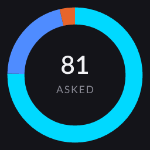
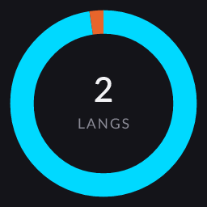

|
Chatbot Analytics
Chat Insights
2026-06-22 13:38 → 2026-07-12 22:38
20-day span · 127 events · Asia/Taipei
|
|
|
|
|
72 %
Open → ask
conversion
|
|
|
96 %
Answered
3 fell back
|
|
|
| ▍ All questions |
81 · newest first |
|
| Jul 12 · 22:38 |
● 你是怎麼被打造出來的? |
| Jul 12 · 22:22 |
● 介紹一下 Product Playbook |
| Jul 12 · 21:51 |
● 他在工作上怎麼運用 AI? |
| Jul 12 · 21:47 |
● 他作為 AI PM 的獨特之處是什麼? |
| Jul 12 · 21:47 |
● 介紹一下 Product Playbook |
| Jul 12 · 21:44 |
● 介紹一下 Product Playbook |
| Jul 12 · 20:01 |
● 他在工作上怎麼運用 AI? |
| Jul 12 · 20:01 |
● 為什麼團隊該錄取他? |
| Jul 12 · 20:01 |
● 他作為 AI PM 的獨特之處是什麼? |
| Jul 12 · 20:00 |
● 你是怎麼被打造出來的? |
| Jul 12 · 20:00 |
● 你是怎麼被打造出來的? |
| Jul 12 · 19:50 |
● 介紹一下 Product Playbook |
| Jul 12 · 19:40 |
● 介紹一下 Product Playbook |
| Jul 12 · 18:58 |
● 他在工作上怎麼運用 AI? |
| Jul 12 · 17:13 |
● 介紹一下 Product Playbook |
| Jul 12 · 17:03 |
● 他作為 AI PM 的獨特之處是什麼? |
| Jul 12 · 17:03 |
● 他如何做產品決策? |
| Jul 12 · 16:21 |
● 你是怎麼被打造出來的? |
| Jul 12 · 14:06 |
● 他在 USPACE 做了什麼? |
| Jul 12 · 14:06 |
● 他作為 AI PM 的獨特之處是什麼? |
| Jul 12 · 08:32 |
● 數據分析技能如何 |
| Jul 12 · 08:31 |
● 他工作的成就有哪些，不擅長什麼 |
| Jul 12 · 08:30 |
● 為什麼團隊該錄取他? |
| Jul 12 · 04:34 |
● 介紹一下 Product Playbook |
| Jul 12 · 04:33 |
● 他如何做產品決策? |
| Jul 12 · 04:33 |
● 為什麼團隊該錄取他? |
| Jul 12 · 04:32 |
● 他作為 AI PM 的獨特之處是什麼? |
| Jul 12 · 04:32 |
● 他在工作上怎麼運用 AI? |
| Jul 12 · 04:32 |
● 他在 USPACE 做了什麼? |
| Jul 12 · 04:31 |
● 你是怎麼被打造出來的? |
| Jul 12 · 04:25 |
● 可以說你是corrective RAG + hybrid retrieval vector search 結合的 chatbot 嗎 |
| Jul 12 · 04:23 |
● 用國中生也能理解的話來介紹你這個chatbot |
| Jul 12 · 04:23 |
● 你會怎麼用一句話介紹你這個 chatbot 所用到的技術 |
| Jul 12 · 04:21 |
● 他的 prompt engineering 是怎麼做的 |
| Jul 12 · 04:20 |
● 你是怎麼被打造出來的? |
| Jul 07 · 09:40 |
● 你是怎麼被打造出來的? |
| Jul 07 · 09:01 |
● Tell me about Product Playbook |
| Jul 07 · 01:02 |
● Tell me about Product Playbook |
| Jul 04 · 00:15 |
● 介紹一下 Product Playbook |
| Jul 04 · 00:15 |
● 介紹一下 Product Playbook |
| Jul 02 · 14:32 |
● 介紹一下 Product Playbook |
| Jun 30 · 09:43 |
● 我也想做出一個像你一樣的AI機器人，怎麼做？ |
| Jun 30 · 09:43 |
● 把他的作品集全部打包成一個PDF。 |
| Jun 30 · 09:41 |
● 我把你丟給codex去分析怎麼做不就行了嗎？ |
| Jun 29 · 22:24 |
● charles 怎麼設護欄的？ |
| Jun 29 · 22:22 |
● charles 是如何做出跨平台的 agent 系統 |
| Jun 29 · 11:21 |
● 他在台灣念的學校ma |
| Jun 29 · 11:20 |
● 他是什麼背景的？念什麼學校，什麼科係？ |
| Jun 29 · 11:20 |
● 我把你丟給codex去分析怎麼做不就行了嗎？ |
| Jun 29 · 11:18 |
● 我也想做出一個像你一樣的AI機器人，怎麼做？ |
| Jun 29 · 11:17 |
● 他目前在什麼公司上班？ |
| Jun 29 · 11:17 |
● 那把他的作品集全部打包成一個PDF。 |
| Jun 29 · 11:15 |
● 把他說的把他這個個人網站上的東西全部轉成中文。 |
| Jun 28 · 01:08 |
● chat log insights 怎麼 work |
| Jun 28 · 01:06 |
● 這個聊天機器人用了哪些 agentic pattern？ |
| Jun 28 · 01:06 |
● 你是 AGI 嗎 |
| Jun 28 · 01:05 |
● 什麼是 transformer 架構？ |
| Jun 28 · 01:04 |
● 他在 Product Playbook 裡怎麼用 Multi-Agent Collaboration？ |
| Jun 28 · 01:04 |
● 什麼是 Resource-Aware Optimization，他怎麼用？ |
| Jun 28 · 01:03 |
● Charles 怎麼運用 Reflection pattern？ |
| Jun 28 · 01:03 |
● Charles 怎麼運用 Reflection pattern？ |
| Jun 28 · 01:03 |
● 他熟悉 agent 設計模式嗎？ |
| Jun 28 · 00:49 |
● 在這個chatbot 專案，他運用到了哪些design pattern |
| Jun 28 · 00:48 |
● reasoning technique 他是如何運用的 |
| Jun 28 · 00:47 |
● charles 的 agent pattern 是什麼 |
| Jun 28 · 00:46 |
● 介紹一下 Product Playbook |
| Jun 26 · 23:18 |
● plutus trade 有什麼特色 |
| Jun 26 · 23:17 |
● 很多人認為PM是協調者，本身沒有產能，Charles 認為呢？ |
| Jun 26 · 23:16 |
● Charles 認為應該要如何帶領 AI 團隊 |
| Jun 23 · 15:55 |
● charles 是何方神聖 |
| Jun 22 · 14:52 |
● 5倍速是如何計算的？ |
| Jun 22 · 13:38 |
● 為什麼團隊該錄取他? |
| Jun 22 · 13:38 |
● 介紹一下 Product Playbook |
|
|
|
▍ Answer mix & language
|
 |
● faq 61 · 75% ● generate 17 · 21% ● fallback 3 · 4% |
|
 |
● zh-TW 79 · 98% ● en 2 · 2% |
|
|
|
|
▍ Daily activity 12 active days
|
|
|
|
▍ Most-asked by frequency
|
| 12× |
介紹一下 Product Playbook |
| 2× |
我也想做出一個像你一樣的AI機器人，怎麼做？ |
| 2× |
Charles 怎麼運用 Reflection pattern？ |
| 2× |
Tell me about Product Playbook |
| 2× |
我把你丟給codex去分析怎麼做不就行了嗎？ |
| 1× |
這個聊天機器人用了哪些 agentic pattern？ |
| 1× |
可以說你是corrective RAG + hybrid retrieval vector search 結合的 chatbot 嗎 |
|
|
|
▍ Corpus gaps hit fallback
|
|
|
|
Median latency 294 ms · 4 corrective rewrites. Source: Qdrant chat_logs, identified visitors only. Times in Asia/Taipei.
|